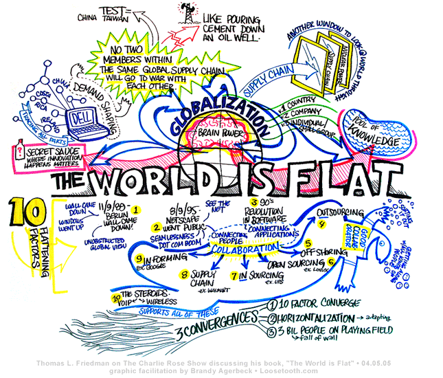
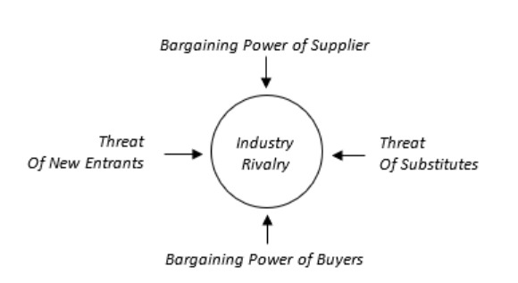

Materi


10 Kekuatan Yang Mendatarkan Dunia
Visit Project

Saya tertarik pada bidang desain UI/UX dan analisis sistem, berfokus pada pengembangan antarmuka yang mudah digunakan dan solusi sistem yang efektif.
Lihat PortofolioBerikut analisis diri saya dalam menghadapi tantangan di bidang teknologi dan desain.